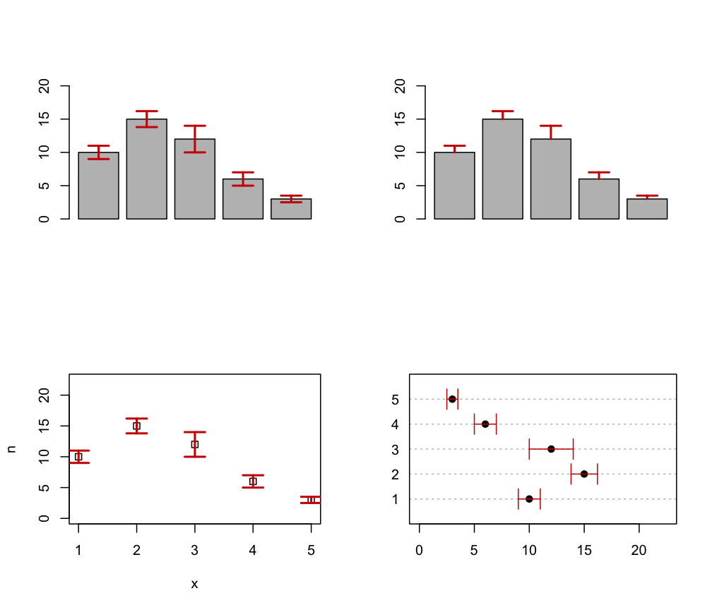

errorBars.RdDraw error bars at x from upper to lower. If horizontal = FALSE (default)
bars are drawn vertically, otherwise horizontally.
errorBars(x, upper, lower, width = 0.1, code = 3, angle = 90, horizontal = FALSE, …)
| x | A vector of values where the bars must be drawn. |
|---|---|
| upper | A vector of upper values where the bars must end. |
| lower | A vector of lower values where the bars must start. |
| width | A value specifying the width of the end-point segment. |
| code | An integer code specifying the kind of arrows to be drawn. For details see |
| angle | A value specifying the angle at the arrow edge. For details see |
| horizontal | A logical specifying if bars should be drawn vertically (default) or horizontally. |
| … | Further arguments are passed to |
par(mfrow=c(2,2)) # Create a simple example dataset x <- 1:5 n <- c(10, 15, 12, 6, 3) se <- c(1, 1.2, 2, 1, .5) # upper and lower bars b <- barplot(n, ylim = c(0, max(n)*1.5)) errorBars(b, lower = n-se, upper = n+se, lwd = 2, col = "red3") # one side bars b <- barplot(n, ylim = c(0, max(n)*1.5)) errorBars(b, lower = n, upper = n+se, lwd = 2, col = "red3", code = 1) # plot(x, n, ylim = c(0, max(n)*1.5), pch = 0) errorBars(x, lower = n-se, upper = n+se, lwd = 2, col = "red3") # dotchart(n, labels = x, pch = 19, xlim = c(0, max(n)*1.5))errorBars(x, lower = n-se, upper = n+se, col = "red3", horizontal = TRUE)